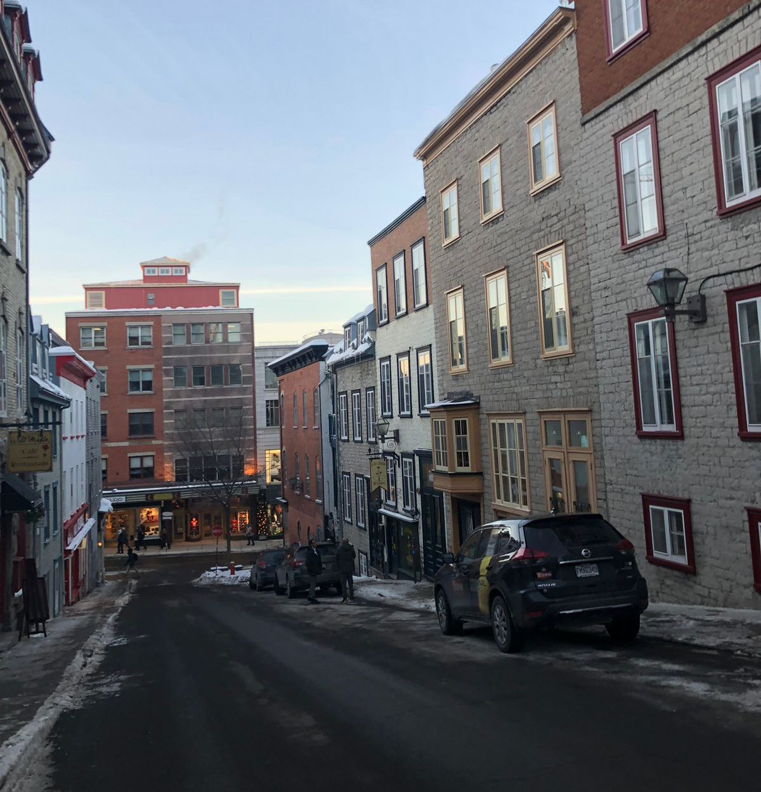
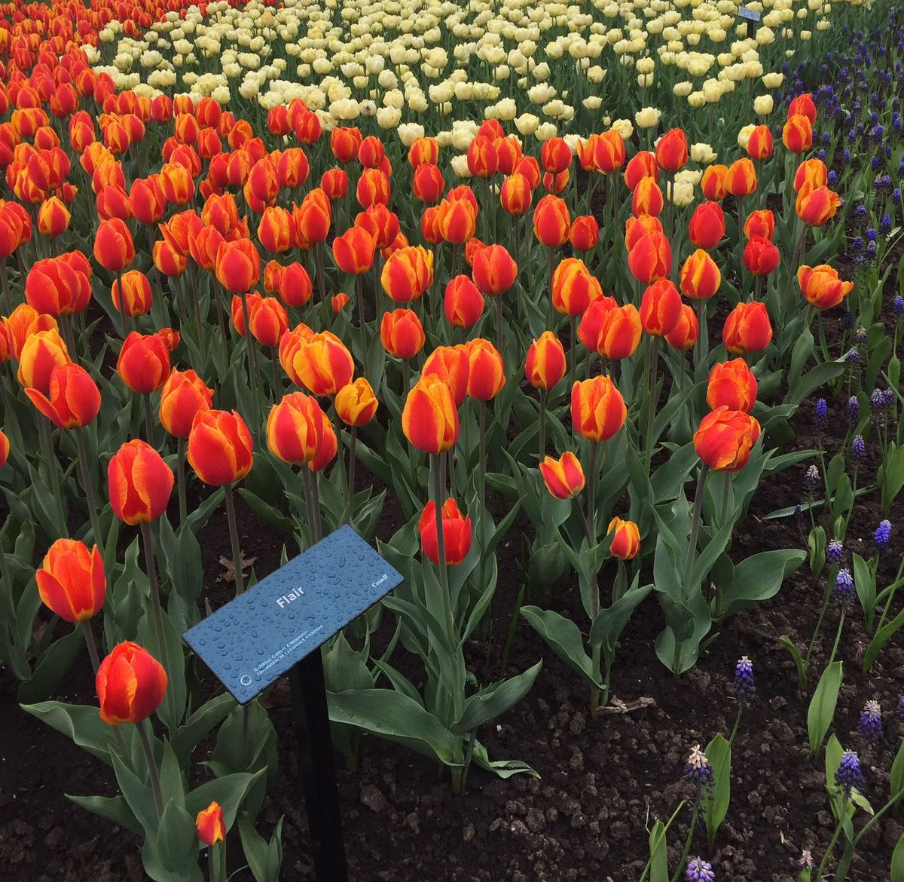
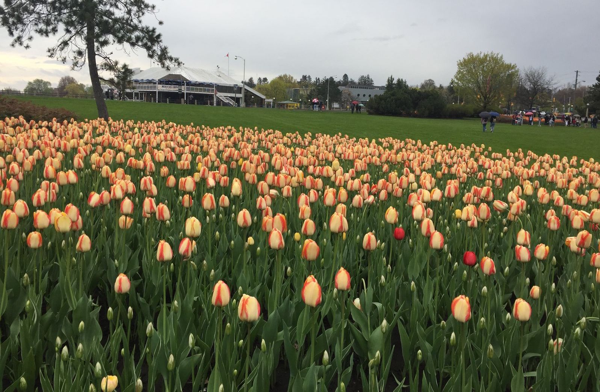
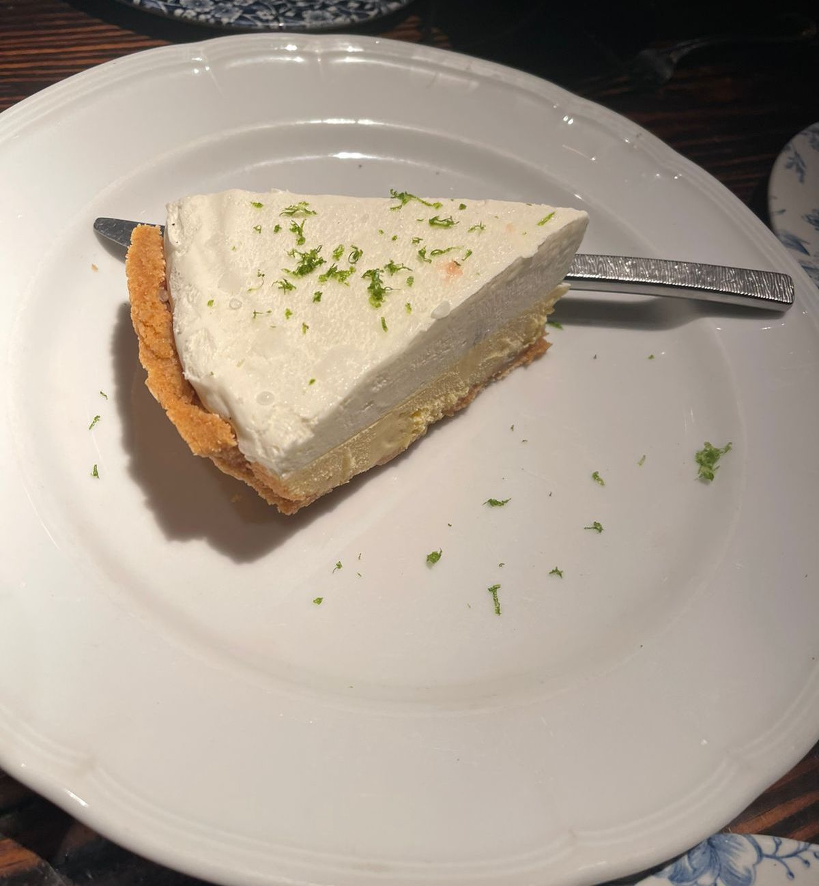
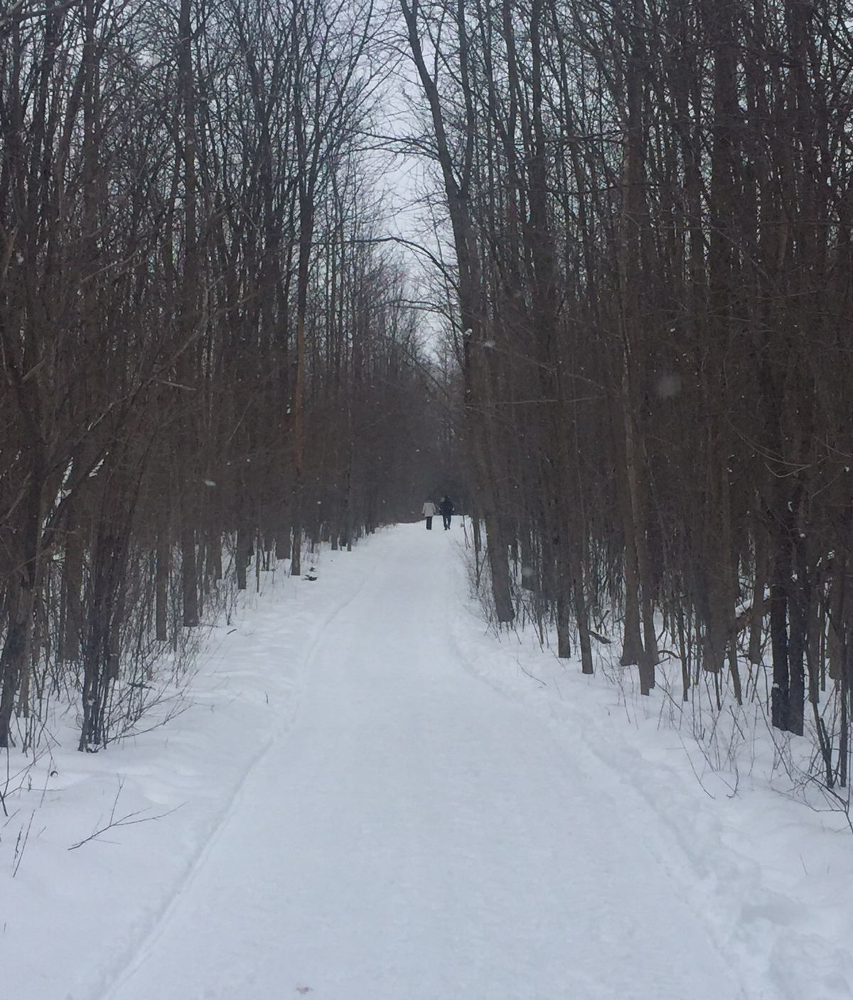
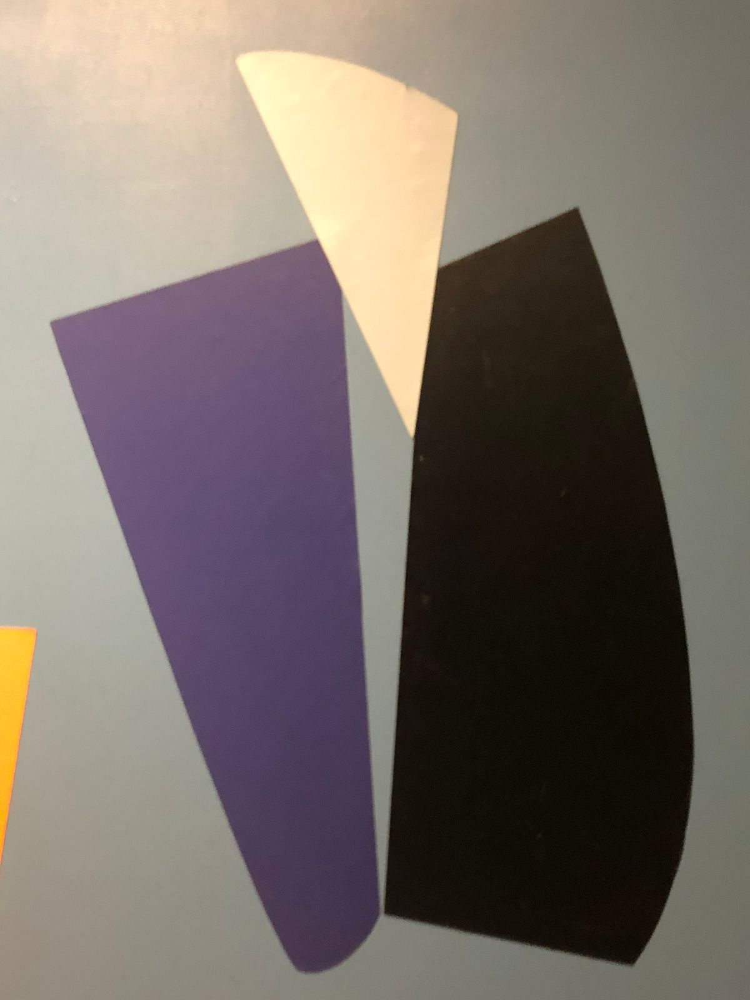

Viejo Montreal

El Viejo Montreal es el distrito historico y una de las principales atracciones de la ciudad. Asentado en la orilla oeste del río Saint-Lawrence, Vieux-Montréal, como se le llama en francés, cubre aproximadamente un área de 1 kilómetro cuadrado.
Jardin Botanico



El Jardin Botanico de Montreal es un gran jardin botanico en Montreal, Quebec. Esta ubicada en Sherbrooke St.
Gastronomia


Montreal es famosa por su comida, desde una escena culinaria que es infinitamente innovadora y tremendamente creativa hasta tradiciones culinarias locales probadas y verdaderas. Los elegantes bistrós, los restaurantes informales y los restaurantes emergentes hacen que las experiencias gastronómicas de Montreal sean tan espectaculares como deliciosas. Pruebe la diversidad con clásicos probados y verdaderos o sacie sus antojos con nuevos giros culinarios.
Mt. Royal

Mount Royal es una colina grande, de 233 metros de altura en la cima, justo al oeste del centro de la ciudad. Le dio su nombre a Montreal y es un lugar natural popular para pasar el rato, sea cual sea la temporada. Este antiguo volcán de 3 picos alberga muchos animales salvajes. El parque también alberga puntos de referencia y atracciones como Mount Royal Chalet, 2 miradores, Mount Royal Cross, un tubo de nieve, una pista de patinaje y parques infantiles, entre otras atracciones. Café des Amis es un restaurante genial en el que puedes almorzar o hacer una pausa al lado del lago Beaver.
Museo de Arte



Uno de los museos más grandes de Montreal y uno de los más destacados de Canadá, el Museo de Bellas Artes de Montreal se encuentra a pocos pasos del casco antiguo. Encontrarás una combinación de disciplinas artísticas que van desde la moda hasta las bellas artes y desde la música hasta el diseño, y más. El museo alberga exposiciones permanentes y temporales y alberga una sala de conciertos. Durante su visita, puede tomar un descanso en el Beaux-Arts Bistro, que sirve deliciosos refrigerios y refrigerios.
St. Paul Street
Saint-Paul Street es una calle adoquinada de 2 km de largo en el Viejo Montreal. Una de las calles más antiguas de la ciudad, es una calle muy comercial en la que puedes encontrar muchos restaurantes que sirven el plato más popular de Quebec: la poutine. Creada a fines de la década de 1950, la poutine es un plato sustancioso hecho con papas fritas, cuajada de queso y salsa marrón. Durante mucho tiempo considerado un plato de clase baja, ahora está tan de moda como puede ser y su popularidad se ha extendido por todo Canadá e incluso en el norte de los EE. UU. La poutine es genial regada con una cerveza fría.